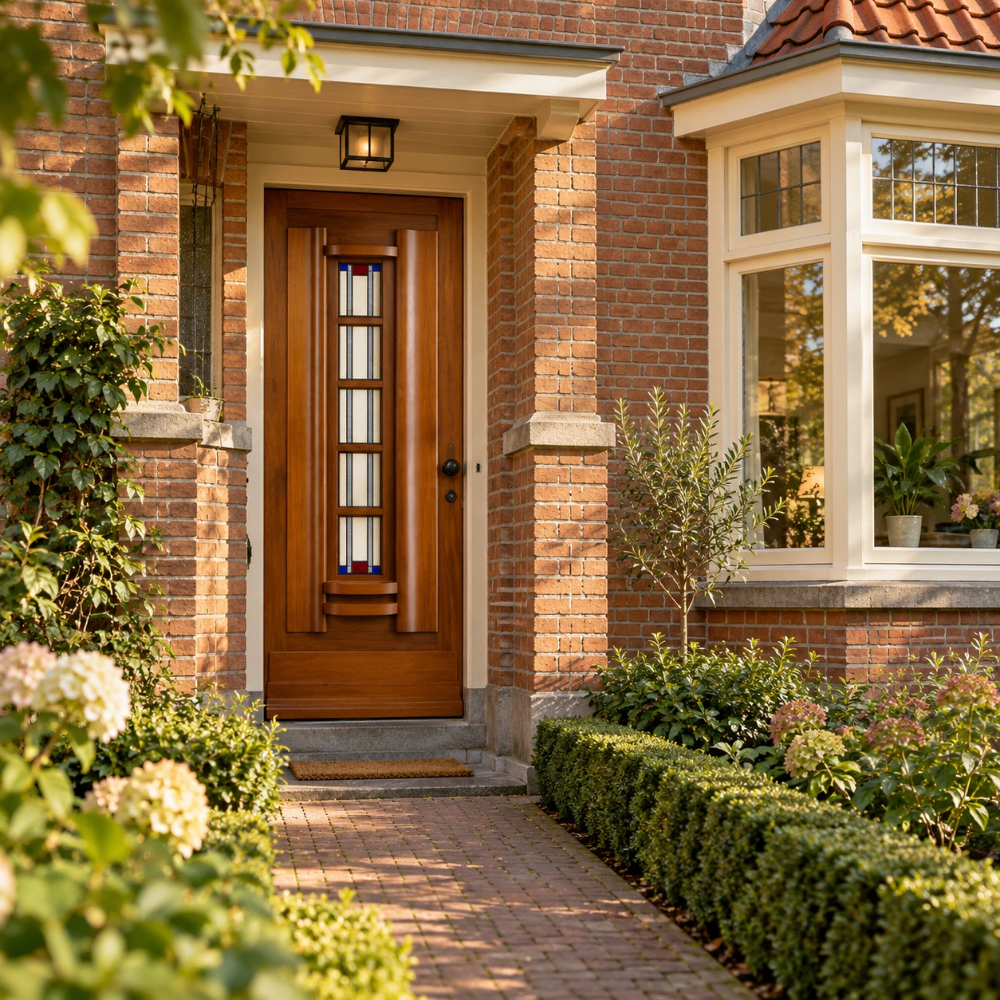
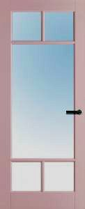

Wij willen u danken voor de hele mooie deur, we krijgen van heel veel mensen (Inclusief timmerman en schilder) complimenten voor de deur en vooral ook de kwaliteit.
Jan Wiegman
Lees de ervaring ↗Een deur doet meer dan ruimtes verbinden. Ze geeft karakter aan uw huis. Ontdek de deur die bij u, uw stijl en uw woning past.

Van een rustige basis tot een uitgesproken entree. Waar begint uw woonwens?

UIT DE COLLECTIE · MODEL 10010-01Een model dat u aanspreekt is het begin. Maar welke afmeting heeft u nodig? En welke uitvoering past bij uw woning? Leg uw wensen aan ons voor. Dan kijken we samen naar de mogelijkheden.
Maak kennis met de specialist ↗Wij willen u danken voor de hele mooie deur, we krijgen van heel veel mensen (Inclusief timmerman en schilder) complimenten voor de deur en vooral ook de kwaliteit.
Jan Wiegman
Lees de ervaring ↗Prachtige solide deur , wij zijn er blij mee 😁. Geleverd volgens afspraak 👍🏽
Brigitte Hoogstraaten
Lees de ervaring ↗Helemaal top de levering het meedenken de super goede uitleg en het contact. In 1 woord geweldig.
Ruud Rijneveld
Lees de ervaring ↗Bekijk de stijlen en bedenk wat uw woning nodig heeft. Een foto van de ruimte helpt om uw wensen duidelijk te maken.
Vertel ons welk type deur u zoekt en welke maten u heeft. Samen verkennen we de modellen en uitvoeringen.
Vraag een voorstel aan voor uw deur. Bespreek uitvoering, prijs en levering voordat u een keuze maakt.
De Deurenspecialist levert alle denkbare modellen in elke afmeting. Geef uw maten en het gewenste model door, zodat de mogelijkheden voor uw situatie besproken kunnen worden.
Ja. Deuren worden in uiteenlopende afmetingen geproduceerd. Daardoor kunnen de verhoudingen en het uiterlijk afwijken van het getoonde model.
Mail uw wensen naar info@deurenkopen.nl of bel 06 2819 7205. Vermeld bij voorkeur het type deur, de afmetingen en het aantal deuren.
U vindt ons aan de Emmalaan 1, 6026 BR Maarheeze. Neem vooraf contact op om een bezoek te bespreken.
Vertel ons uw plannen. Dan denken we met u mee.